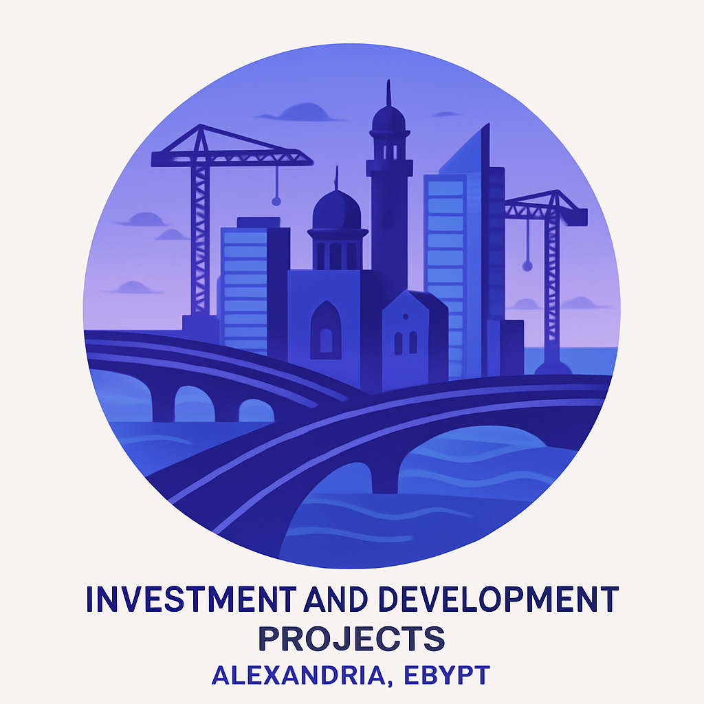
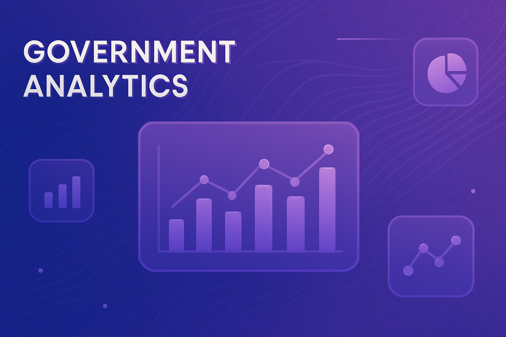

توزيع المشروعات حسب البرنامج الرئيسي
توزيع الميزانية حسب الأحياء
مقارنة مصادر التمويل
إحصائيات سريعة

0
متوسط تكلفة المشروع
0%
نسبة التشييدات
0%
نسبة المعدات
قائمة المشروعات
| السنة | الحي | البرنامج الرئيسي | المشروع الرئيسي | المشروع الفرعي | مصدر التمويل | الإجمالي | الإجراءات |
|---|

التحليلات المتقدمة
تحليل المكونات العينية
اتجاهات الإنفاق
مؤشرات الأداء
0%
نسبة التمويل الاستثماري
0
متوسط الميزانية لكل حي
0
توزيع الميزانية
0%
كفاءة استخدام الميزانية
0%
تنوع المشروعات
0%
التوزيع الجغرافي
أدوات التحليل المتقدمة
تصدير البيانات
تصدير البيانات المفلترة إلى ملف CSV
تقرير ملخص
إنشاء تقرير ملخص شامل للبيانات
رؤى ذكية
عرض الرؤى والتوصيات المستخرجة من البيانات